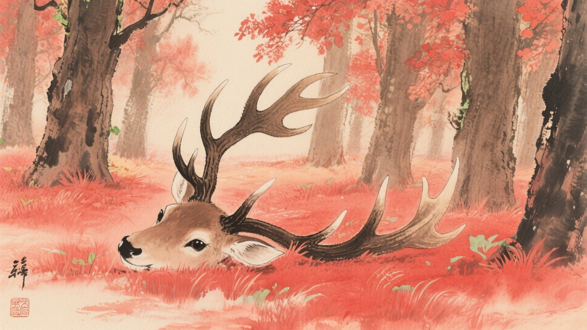
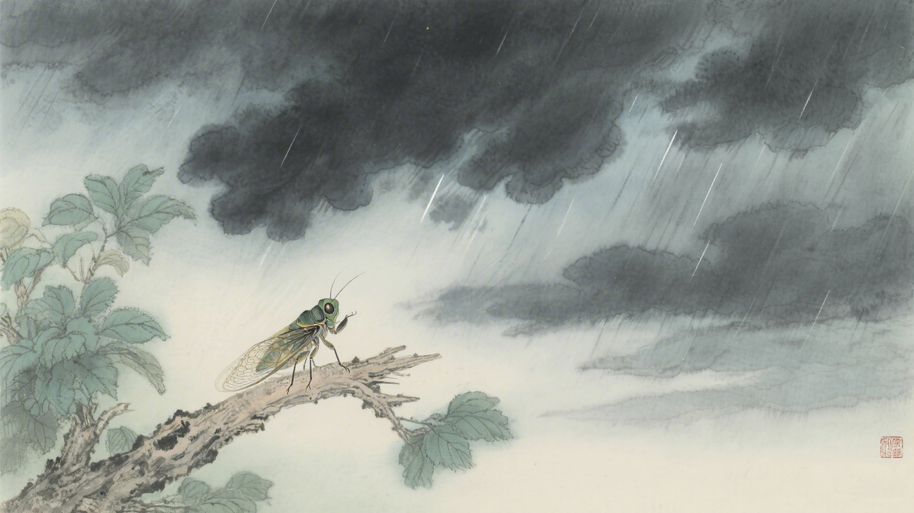
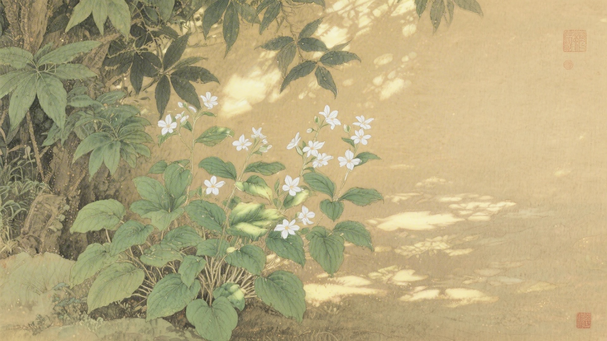
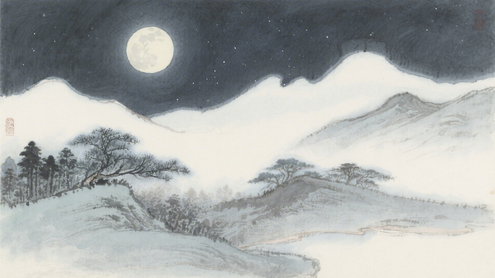
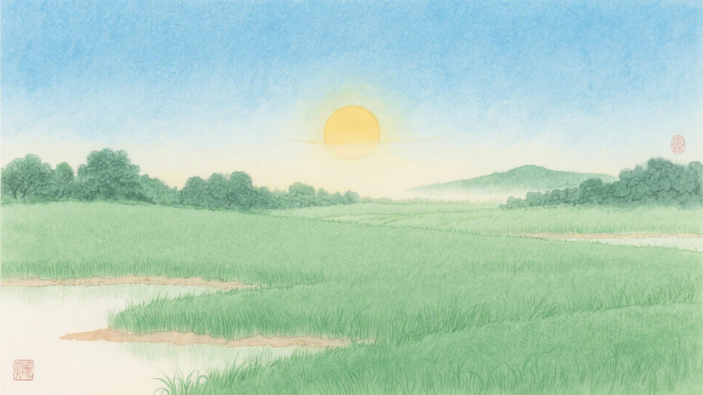

《中国传统色：故宫里的色彩美学》一书中为什么把下面这些颜色归入夏至节气？
赩炽、石榴裙、朱湛、大繎
月魄、不皂、雷雨垂、石涅
扶光、椒房、红友、光明砂
山矾、玉頩、二目鱼、明月珰
夏至这天，白天最长，夜晚最短。鹿角开始脱落，蝉开始鸣叫，半夏草长出来了。古人说夏至有三候：鹿角解，蜩始鸣，半夏生。这十六种颜色，便从这三候里来。
夏至的阳光最烈。它把一切都烤得发烫，把颜色也烤得浓烈。红的更红，黑的更黑，白的更白，像是太阳在炫耀自己的力量。
对应：夏至节气一候"鹿角解"的起、承、转、合四色。
色彩意象：鹿角脱落，热血涌动。
从鲜红到深红，是鹿角脱落时的热血颜色，也是夏至时节最热烈奔放的色彩。

对应：夏至节气二候"蜩始鸣"的起、承、转、合四色。
色彩意象：蝉鸣阵阵，雷雨将至。
从素白到深黑，是蝉鸣时分从晴空到雷雨的色彩变化，也是夏至时节最戏剧性的天色。

对应：夏至节气三候"半夏生"的起、承、转、合四色（其一）。
色彩意象：半夏草长，阳光灿烂。
从晨光到朱砂，是半夏草在阳光下的色彩变化，也是夏至时节最灿烂的阳光之色。

对应：夏至节气三候"半夏生"的起、承、转、合四色（其二）。
色彩意象：夏夜的月光和山野。
从银白到亮白，是夏夜月光下山野的颜色，也是夏至时节最清凉宁静的色彩。

夏至这天，太阳直射北回归线。影子最短，白昼最长。颜色也站到了最高点，红的站到最红，白的站到最白，黑的呢，站到最深。像是约好了似的，一起把最浓烈的自己亮出来。

颜色也懂得顶点。它们知道，过了夏至，白天就一天天短了。所以它们趁着太阳最烈的时候，把最浓最艳的颜色都拿出来。像是狂欢节的最后一夜，要把所有的华服都穿上。
（以上解读不代表原书观点）